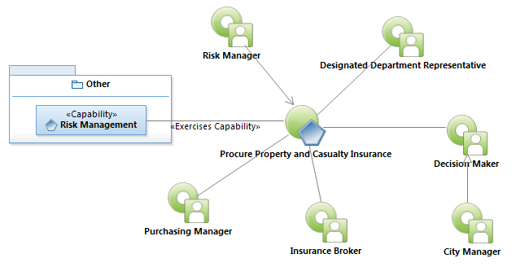
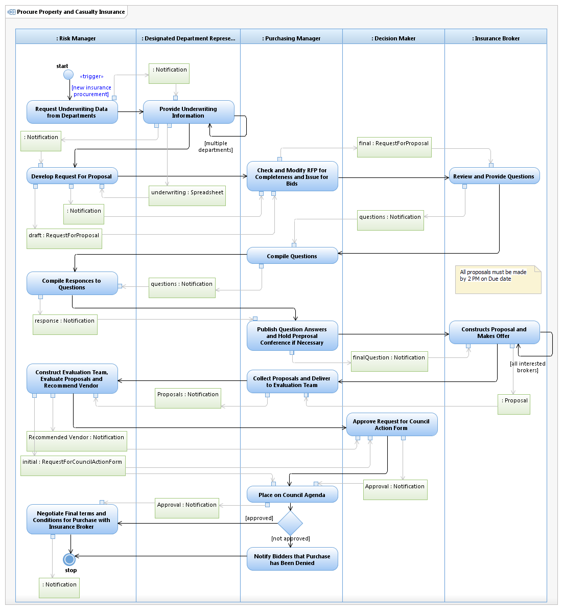

Use Case: Procure Property and Casualty Insurance
Enterprise Architect: Aaron Brown, IT Enterprise Architect Senior
Creation Date: 12/21/2012
Approver: Leslie Milvo, Wage Continuation Manager
Approval Date: 12/21/2012
The compilation of organizational underwriting data, issuance of request for proposals for insurance quotes, evaluation of those quotes and negotiated procurement of property insurance coverage.
Follow link to Role Definitions

Use Case Model: Procure Property and Casualty Insurance

Activity Model: Procure Property and Casualty Insurance